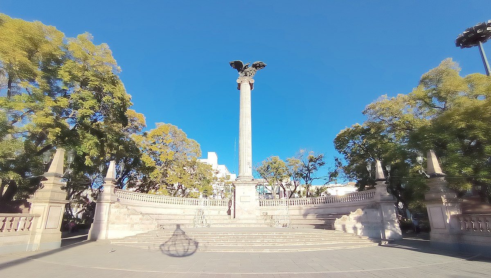
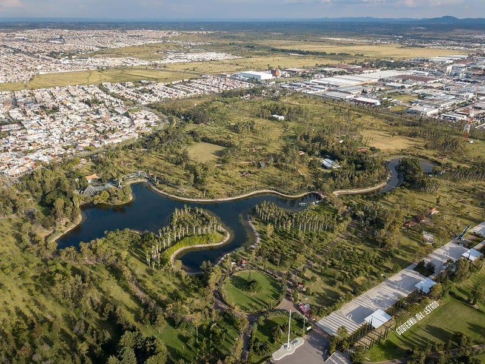

Limpieza de playas
Únete a este evento que busca limpiar el centro de tu ciudad. Podrás recoger la basura que contamina las
calles, separar los residuos para su reciclaje y aprender sobre los efectos que causa la contaminacion.
Además, podrás disfrutar de un día al aire libre y conocer a otras personas que comparten tu interés por
el
medio ambiente.
Para participar en este evento, solo necesitas llevar ropa cómoda, protector solar, guantes y una bolsa
para
recoger la basura. El evento se realizará el sábado 16 de marzo de 2024, de 9:00 a.m. a 12:00 p.m., en
la
Plaza de la Patria.

Reforestación urbana
Únete a este evento que busca reforestar los espacios públicos de tu ciudad y mejorar la calidad del
aire.
Podrás plantar árboles y plantas nativas, regarlos y cuidarlos, y aprender sobre la importancia de
la
biodiversidad y los servicios ecosistémicos. Además, podrás contribuir a la belleza y el bienestar
de tu
comunidad y conocer a otras personas que comparten tu pasión por la naturaleza.
Para participar en este evento, solo necesitas llevar ropa adecuada, zapatos cerrados, sombrero, agua
y
una
pala. El evento se realizará el domingo 17 de marzo de 2024, de 10:00 a.m. a 2:00 p.m., en el parque
Rodolfo
Landeros Gallegos.

Reciclaje creativo
Únete a este evento que busca reciclar los materiales que normalmente se desechan y convertirlos
en
objetos
útiles y artísticos. Podrás crear desde macetas, lámparas, juguetes, hasta accesorios, ropa y
muebles,
usando botellas, latas, cartón, papel, tela y otros materiales reciclables. Además, podrás
desarrollar
tu
creatividad y tu habilidad manual, y aprender sobre la importancia de reducir, reutilizar y
reciclar los
residuos.
Para participar en este evento, solo necesitas llevar los materiales reciclables que quieras
usar,
tijeras,
pegamento, pintura y otros elementos decorativos. El evento se realizará el sábado 23 de marzo
de 2024,
de
11:00 a.m. a 3:00 p.m., en la exposicion ganadera de la isla de San Marcos.